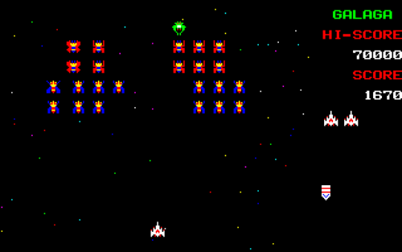
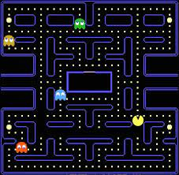
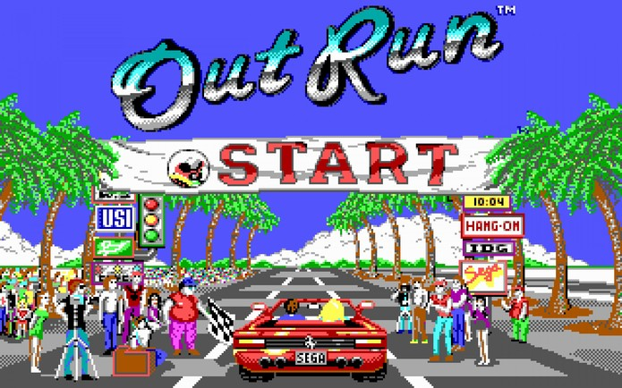

Galaga
Galaga é um jogo para arcade lançado pela Namco em 1981 no Japão, e, no mesmo ano, nos Estados Unidos, sob licença da Midway. No Brasil, o jogo também ficou conhecido pelo nome Fantastic, é a sequência de Galaxian.
Pac-Man
Pac-Man é um game criado lançado pela Namco, produzido originalmente para Arcade no início dos anos 1980, tornou-se um dos jogos mais jogados e populares no momento, tendo versões modernas para diversos consoles e continuações para tantos outros, inclusive na atualidade.
Out Run
Out Run é um jogo de corrida de 1986 criado por Yu Suzuki e a Sega-AM2 para o mercado de arcades. Em entrevistas, Yu Suzuki classificou o game como um jogo de "direção", não de corrida, propriamente dito. A afirmação faz sentido, já que o player, a bordo de uma Ferrari Testarossa, corre contra o tempo – e não contra rivais.
